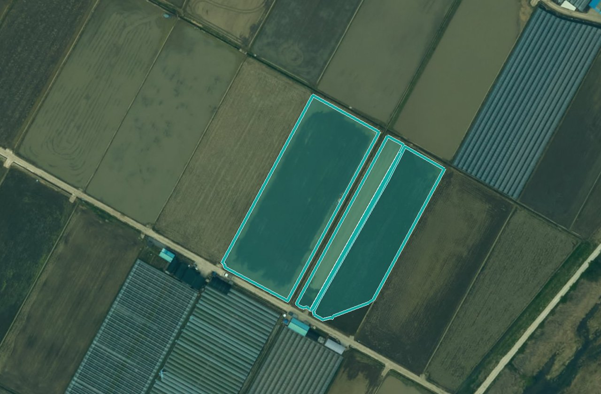
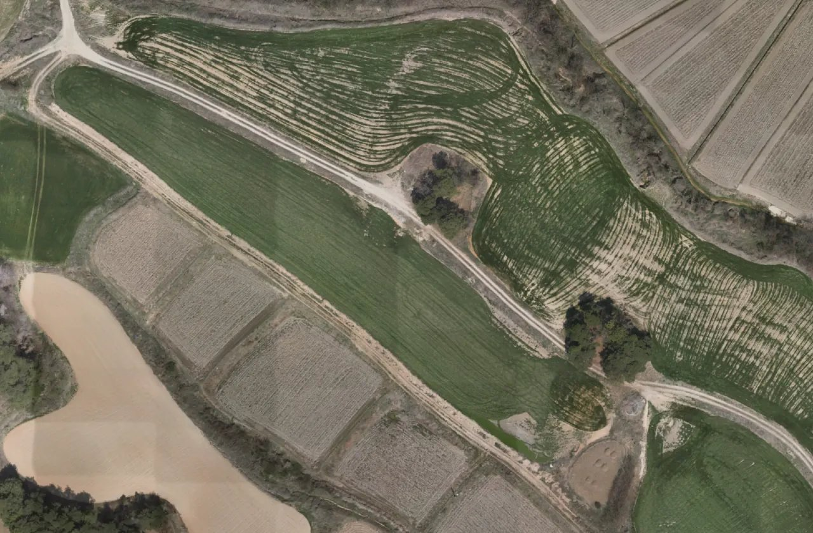
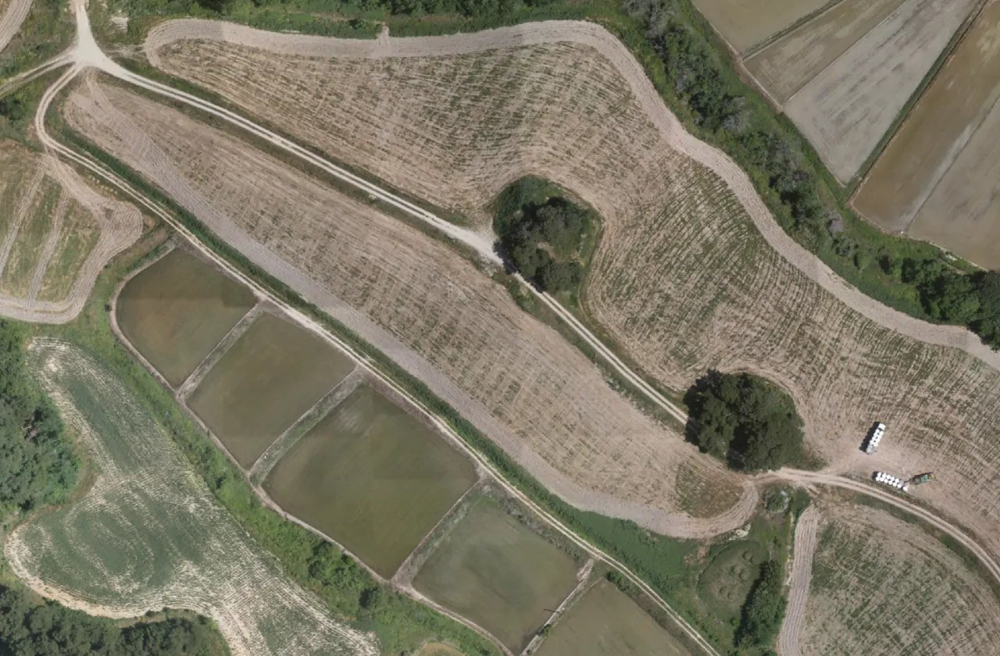
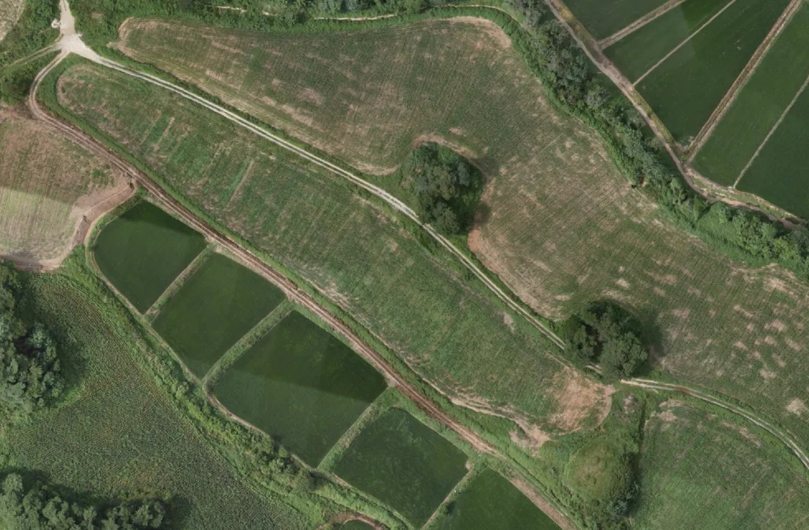
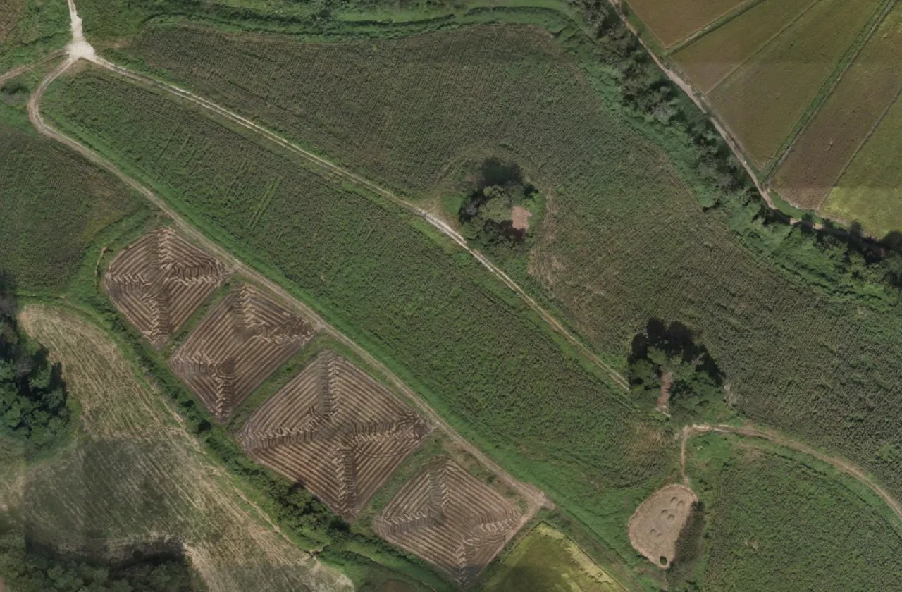

내 서비스›영농관리 행정서비스
영농관리 행정서비스
농지이용 경작·비경작 · 비닐하우스 · 사료작물 · 2025년 사업 · 농정과 최근 결과 2026.06.08현황결과 지도필지 목록행정정보와 비교보고서

현장 확인 필요 · 남원시
1,035필지~
결과 지도 열기필지 목록
2025년 드론영상 · 휴경·전용 의심 필지 윤곽
읍면별 현장 확인 필요많은 곳부터
읍면을 누르면 그 읍면의 결과 지도로 갑니다.
영상과 결과 — 2025년 네 시점같은 자리 · 4·6·8·10월

2025.04
2025.06
2025.08
2025.10경작 흔적이 네 시점 모두 보이지 않으면 휴경·전용 의심으로 분류합니다. 판정은 담당자가 현장에서 확정합니다.
내가 확인할 필지3건
- 운봉읍 권포리 1229-3휴경·전용 의심확인 전
- 보절면 도룡리 905-7휴경·전용 의심확인 전
- 보절면 도룡리 844휴경·전용 의심확인 전
담당
농
박서연 · 농정과우리 시 담당 · 063-620-6114(대표)
LX
LX에 검토 요청 보내기
김도윤 · LX 담당이 서비스를 만들고 갱신하는 사람
최근 결과
- AI 분석
- 2026.06.082025년 드론영상 네 시점으로
- 영상
- 2025년 드론영상 4·6·8·10월
- 다음
- 우리 영상을 넣으면 새 결과가 더해집니다
전북특별자치도 남원시대표전화 063-620-6114AI 분석 · 모델 개발과 갱신 — LX 한국국토정보공사